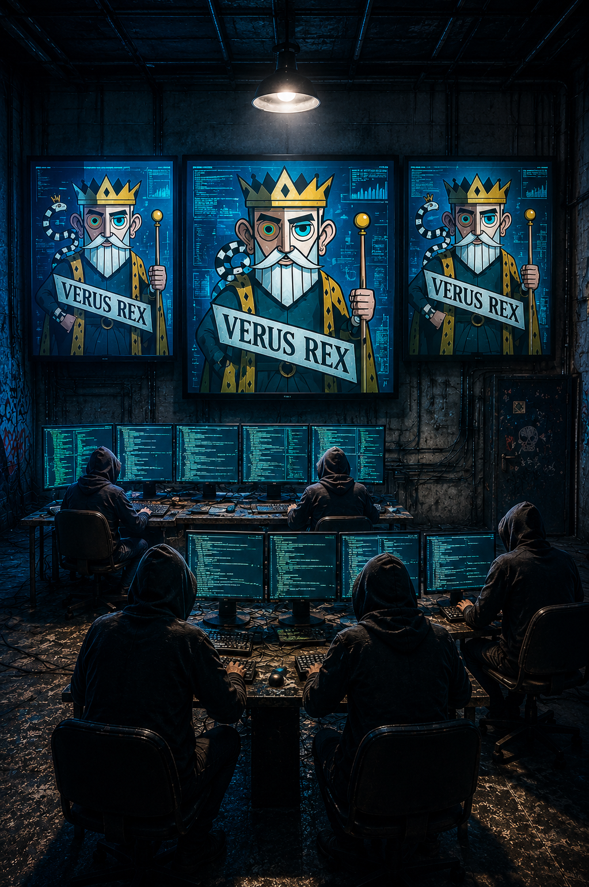
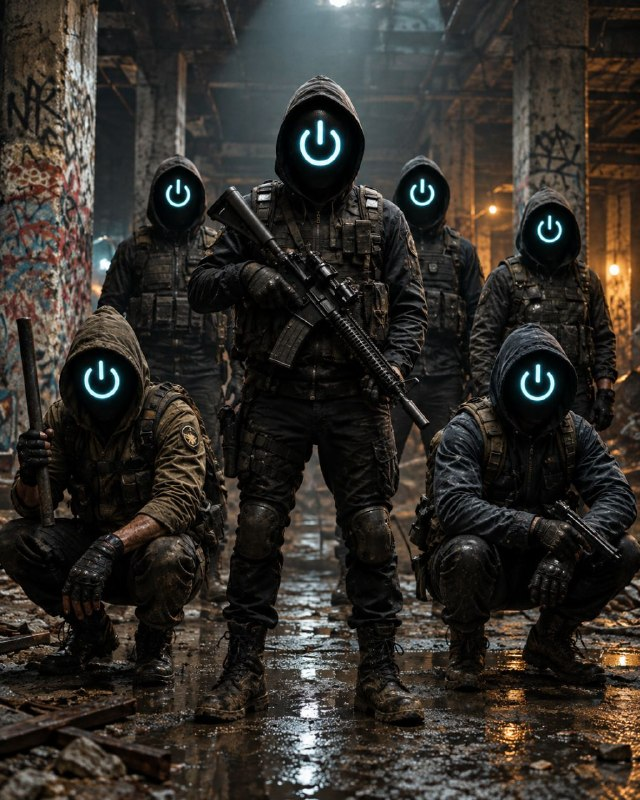
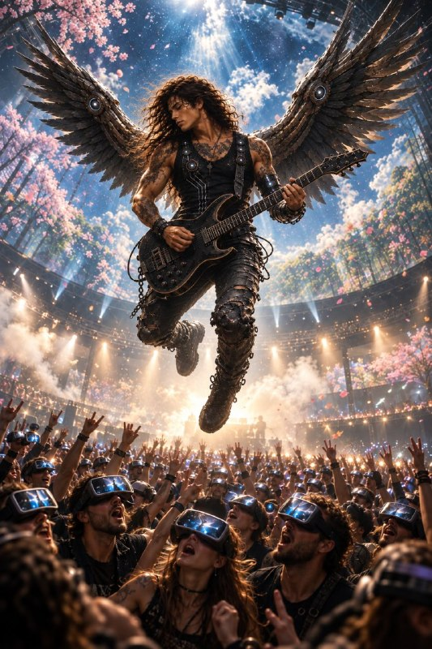

A mesma tecnologia pode representar esperança, ameaça ou domínio.
Em Primavera Artificial, o surgimento de Solomon faz com que crenças, interesses e medos colidam. Nenhum dos lados cabe facilmente em uma única definição: cada força reivindica uma resposta para o que significa continuar humano.
Progresso e promessa
Neurarchy
Gigante da neurotecnologia responsável por Solomon, aposta em inovação para ampliar capacidades humanas e enfrentar doenças neurodegenerativas.
A empresa se apresenta como uma ponte para uma nova era. Mas, quando ciência, mercado e influência social se encontram, suas decisões passam a afetar muito mais do que seus usuários.
Movimento hacktivista contrário à comercialização de Solomon. Para seus integrantes, entregar a mente a uma tecnologia tão poderosa pode custar a autonomia das pessoas.
Suas ações expõem dúvidas que muitos preferem ignorar — ainda que seus métodos também coloquem em questão onde termina a resistência e começa o risco.

Ruptura e recusa
Shutdown
Radicais neoludistas que rejeitam a tecnologia e a automação como forças capazes de desfigurar a vida humana e seus vínculos mais essenciais.
Enquanto outros tentam regular ou contestar Solomon, o Shutdown defende uma ruptura mais profunda com o mundo que tornou o implante possível.

Pressão pública
Vozes que tornam o conflito ainda mais instável.
Influência e imprevisibilidade
Shiren Meysel
Artista controverso cuja aproximação com a Neurarchy amplia o alcance público de Solomon. Sua visibilidade ajuda a empresa a conquistar atenção — mas suas atitudes e polêmicas também podem se transformar em um risco difícil de controlar.

Dúvida e resistência social
Anti-solomonistas
Parcela da sociedade que se opõe ao implante Solomon por temer a perda de privacidade, autonomia e livre-arbítrio. Nem todos compartilham os mesmos métodos ou objetivos, mas suas preocupações alimentam um debate que a Neurarchy não pode ignorar.
A pergunta que atravessa a saga
Até onde iríamos para aperfeiçoar a humanidade?
Entre a promessa de cura, o temor da manipulação e a recusa da máquina, o conflito não oferece respostas simples. É nele que os protagonistas precisam descobrir em quem confiar — e quais escolhas ainda lhes pertencem.